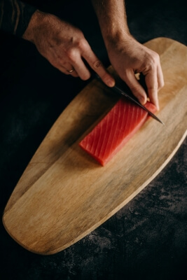
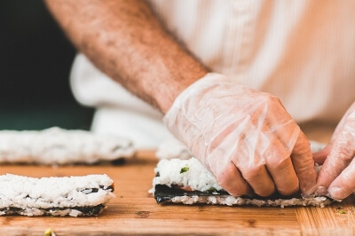
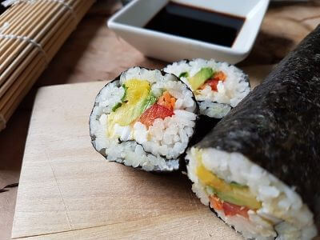

To get started make sure you get seaweed specific for sushi-making, which it should state on the package. Spread the seaweed with a layer of prepared sushi rice (this whole post covers how to make the rice), and flatten gently with a rice paddle but do not smash the rice:
.jpg)
This is how you should cut your salmon for your sushi rolls. First, cut straith down through the filet, then cut that piece in half through the center so you have a small strip:
Place your desired ingredients onto the rice. For example (And you are not limited to these options only):
Roll it up tightly, using a bamboo mat. It’s a specific kitchen item, but you can get a decent one cheaply in most food stores around you, so you should think about getting one.If you don’t have one, you can sort of use parchment paper or plastic wrap, but you won’t be able to wrap it as tightly, so buy one if you plan to make sushi regularly.
Then use a sharp knife to cut the sushi roll into pieces. I don’t find it particularly better to use a serrated knife. Just make sure to use a sharp one!
| Calories | Carbohydrates | Protein | Fat | Saturated Fat | Cholesterol | Sodium | Fiber | Sugar |
|---|---|---|---|---|---|---|---|---|
| 190kcal | 11g | 10g | 12g | 5g | 40mg | 92mg | 2g | 1g |